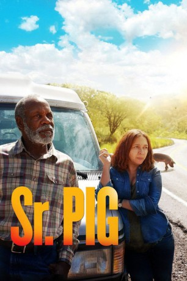

#5380 Mr. Pig
Alternativ: Sr. Pig (Originaltitel)
 
 IMDB-Wertung: 5.6 / 10
IMDB-Wertung: 5.6 / 10  Metascore: 0
Metascore: 0 
Ein alternder Landarbeiter (Danny Glover) macht sich auf den Weg, um von den USA nach Mexiko zu reisen. Begleitet wird er dabei von einem ungewöhnlichen Mitstreiter – einem Schwein. Zwischen den beiden Individuen entwickelt sich während der Reise eine tiefe Verbindung…
WEBHDRIP
Jahr: 2016
Dauer: 91 Minuten
FSK:
Land: Mexiko Studio: First Run FeaturesTonspuren:
Untertitel:
Auflösung: 1080p (1920x808) Größe: 3932 MB
Genre: Drama
Regisseur:  Diego Luna
Diego Luna
Drehbuch: Julien Maury
Soundtrack:
Darsteller:
 Danny Glover als Ambrose
Danny Glover als Ambrose Maya Rudolph als Eunice
Maya Rudolph als Eunice- José María Yazpik als Payo
 Joel Murray als Gringo
Joel Murray als Gringo- Naian González Norvind als Mormon Susan
- Veronica Gutierrez als Nurse
- Angélica Aragón als Chila
- Gabriela Araujo als Brianda
- Paulino Partida als Ermilo
- Johanna Murillo als Payo's Wife
- Juan Pablo Medina als Customs Agent
- Nadia Bastarrachea als Toll Woman
- Erick Blackmer als Guard
- Pablo Cruz als Tourist
- Carisa de Leon als Payo's Wife's Friend
- Gerardo Elizalde als Police
- Mary Paz Gonzalez als Woman at Showers
- David Illescas als Groom, Lam
- Karina Lechuga als Mormon Lourdes
- Alejandro Luna als Doctor
- Raymundo Medina als Dead Cattle Buyer
- Hector Molina als Rancher
- Nicolasa Ortiz als Bride, Lilliana
- Jose Jair Robles als Toll Man
- Francisco Javier Ruiz als Edgar
- Mark Peter Schwaiger als Boat Traveler
- Gregory Smith als Tourist
- César Augusto Villatoro als Man in Suit
- Vera Wilson als Receptionist
Datei: X:\2016(G-M)\Mr. Pig (2016, FSK, 1920x808).mkv seit 24.01.2017
Festplatte: HD 2016(A-Z)
 Es gibt insgesamt 164 Filme in der Gruppe '2016(G-M)'
Es gibt insgesamt 164 Filme in der Gruppe '2016(G-M)'